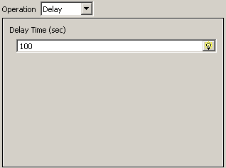
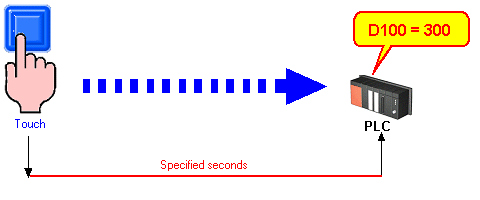

|
|
|
|
|
|
|
|
Use the dialog to set up a delay. You can create an operation that introduces a delay before an operation executes.

In this operation, you are specifying the time (in seconds) to wait after you touch or release a switch, change a selector, or Action triggers are met and before the operation executes.


In the When Touch tab, the timer for the number of seconds specified here starts when the object is touched. In the When Release tab, the timer starts when the object is released.
Delays range from 0 to 300 seconds. Even if you set a longer delay, the delay ends at 300 seconds.
If there is a panel change before the delay counter has elapsed, operations defined after a delay operation will not execute.
Specify a constant or a variable in the Delay Time box.
Click Add to add to the operation list.
Specify the operation to execute, add to the operation list, and click OK.
The operation executes after the delay time passes.

Delay operations are accurate to +/- 100ms.
You cannot set up a delay operation before a momentary ON/OFF operation.